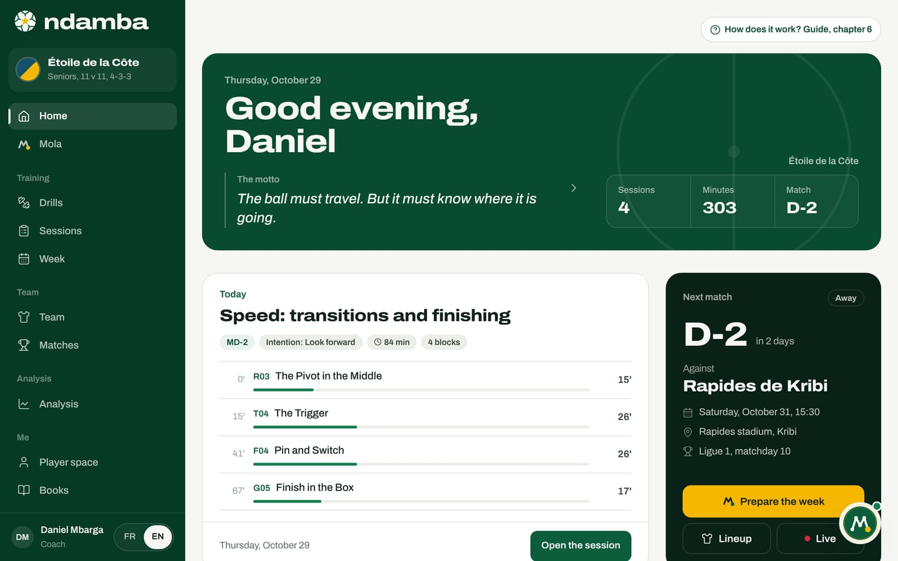

Ndamba in ten minutes
What Ndamba is, who it serves, how its five pieces fit together (the app, Mola, The Njangi Code, Lionceaux and Lionceaux Football), the weekly working loop, what exists today and the goal for the next fifteen years.
11 min read
Ndamba is Cameroonian street slang for football. It is also a platform built around a single idea, possession with purpose, and a motto you will meet on every page: "The ball must travel. But it must know where it is going." If you only have ten minutes, this chapter is enough to understand what Ndamba does, who it is for, what already works and where the project is heading. The chapters that follow take each screen step by step.
Ndamba in one sentence
Ndamba helps a football team, from grassroots to the first team, play with a shared idea, train it every day and check, match after match, whether it really applies it.
To do that, the platform brings together five pieces that speak the same language:
| Piece | What it is | Who it is for | Where to find it |
|---|---|---|---|
| The Ndamba app | Training, team, matches, analysis and the player space | Coaches, analysts, technical directors, federations, players, parents | Get started on the website, then the app menu |
| Mola | The agent that welcomes you through a conversation, then acts inside the app | Everyone | Get started with Mola, then Mola in the menu |
| The Njangi Code (Le Code Njangi) | The method book: 36 chapters in nine parts, 64 drill sheets | Coaches, analysts, technical directors | The books |
| Lionceaux, book 1: Le Ballon qui voyage | The children’s novel: 40 chapters, five parts, five countries, 40 Ball Lessons | Children aged 8 to 12, parents, youth coaches | The books |
| Lionceaux Football | A football game that runs in the browser | Children, and anyone who likes to play | Football game |
The public website shows all five on one page. At the top sits the motto; beside it, an animated move from book 1 runs from the goalkeeper to the net; below it, two buttons open a complete demo without creating an account.

The app: five spaces
The app arranges its screens in four menu groups, Training, Team, Analysis and Me, with Home and Mola at the very top. Behind those menus are five working spaces.
Training. The library of the method’s 64 drills, each animated like a short video, with its coaching points and intentions; the session builder, which puts a session together in a few taps; and the week, which places each session relative to the next match (from MD-4 to MD-1, codes explained in chapter 2) and shows the training load.
Team. The squad, each player’s profile with ten skills rated from 1 to 4, the player’s journey season after season, and the staff’s observations.
Match. The opponent, the system, the line-up on the pitch, a game plan for the four moments of the game and a call-up by WhatsApp or SMS, prepared in the app and sent by you.
Analysis. The match is filmed with a phone, its video goes on YouTube or Facebook (Ndamba stores no video), then it is tagged in the studio: one tap per action, at the right moment, in slow motion if needed, and every code can be watched again. Without a video, you tag live from the touchline, with the same buttons. The Njangi Index, a score from 0 to 100, is computed as you tag. The match report breaks it down into five sub-indices and suggests next week’s drills. A paid AI analysis, done by Claude on the frames of the video file, adds estimates of possession, territory and block.
The player space. For the youngest: daily challenges, the 40 Ball Lessons, the Njangi notebook and the journey. From 16: a performance space with the week, form, load and the last match.


Mola, the agent that acts
"Mola" means "mate" in Cameroonian camfranglais. As soon as you tap Get started with Mola, it welcomes you with a conversation: you answer a few questions, it fills in your profile as you talk and sets up your space. After that, it acts inside the app with the same tools you use. You can write to it, for example, "Plan my week before the match", "Create an MD-3 session to progress" or "Analyse my last match".
Mola can plan the week before a match, create a session, set up a match, add players or create the team, draft the call-up, analyse the last match with the Njangi Index, suggest drills from The Njangi Code, open a Ball Lesson or a chapter of the novel, and export the week to your calendar.
One rule never changes: Nothing goes out without you. Mola creates and prepares inside the app. A WhatsApp message, a text, an e-mail or a calendar file always waits for your approval in the To approve tab, and you are the one who sends it.
Mola runs on a rules engine built into the app. When the server holds a key for an AI model (Anthropic), Mola understands free-form sentences better; without one, the rules engine answers on its own.

Two books and a game
The Njangi Code is the method book, written by William Foteping for coaches and analysts, from grassroots to national teams. It sets out the game model (the four moments, the five intentions of possession, the roles), youth development in Africa, the periodised week, the Njangi Index and the match report, and ten measures for a federation. Its 64 drills and their diagrams are the ones in the app: the Read in the book button on a drill sheet takes you to the book.
Lionceaux is the children’s saga that tells the same method to young readers. In book 1, Le Ballon qui voyage, two Cameroonian brothers, BriBri (12) and Kaydoudou (10), follow their parents from Douala to Maryland, then to France, Catalonia and London. In each country they learn one piece of football. The novel’s 40 Ball Lessons live in the app’s player space. Six books are planned; book 1 is published.
Both books are free to read online, chapter by chapter, whatever your plan. That is a rule of the project: the books and the drills are never behind a paywall. The books are written in French, so their chapter titles appear in French in the English edition of the site.
Lionceaux Football is the video game of this world: the holiday neighbourhood tournament, an eleven-a-side match on a red-earth pitch, sixteen sides from Douala and Yaoundé, including the clubs from the book. You play with a finger on a phone, with a controller or with the keyboard, right in the browser.

Who Ndamba is for
Ndamba knows six roles, which you pick while talking to Mola: Coach or educator, Player, Analyst, Parent, Manager or technical director and Federation or league. Chapter 3 shows what each one sees and the path that suits it.
The promise is the same for all of them: the same words and the same drills from U8 to the first team, for the neighbourhood coach as much as the staff of a top-flight club. Two demos show it. The Pro club demo opens Étoile de la Côte, a professional club in Douala: 22 players, head coach Daniel Mbarga, a 2-1 win tagged live, and the week before a trip to Kribi. The U13 academy demo opens the Lionceaux de Bonamoussadi U13, the team of Kaydoudou and BriBri in the novel: 15 players, four sessions this week, four matches already analysed and a match coming up on Saturday. These clubs and players are demo characters.

The loop: plan, train, play, analyse, learn
All of Ndamba fits into a loop the team goes round every week. Here is how it runs in the app.
- Plan. You add the next match with New match. On the home screen, the Next match card shows the countdown; the Prepare the week button creates the missing sessions on whichever days from MD-4 to MD-1 are still ahead. It leaves free the day of another match and the day after it, kept for recovery.
- Train. Each session is made of drills from the book, with their minutes and their intention. The Today card shows the day’s session; Open the session shows it in full.
- Play. The match sheet holds the line-up and the game plan. Mola drafts the call-up, you approve and send it. On match day, the Live button opens the tagging pad.
- Analyse. During the match, you tap one button per action: completed pass, line broken, box entry, loss, ball won back within five seconds. At the end, the report gives the Njangi Index, its five sub-indices and the weak spot of the day.
- Learn. The report suggests the drills that train that weak spot, and the home screen offers to plan the next week around the matching intention. Players learn through the lessons, the challenges, the notebook and their journey. Then the loop starts again.
Take the pro club demo. Étoile de la Côte beat Météore de Bafoussam 2-1. The report shows a Njangi Index of 67.9 out of 100, read as "Solid Njangi". Four sub-indices are solid; Fixation, at 8.3 out of 20, is the weakest. The home screen draws the conclusion: next week will work on the intention "Pin" (the English name of the French Fixer, drawing opponents in), and the Prepare the week around "Pin" button does it in one tap. In the demo the week is already set: its Wednesday MD-3 session already works on the intention "Pin".

How the pieces hold together
The five pieces are not simply placed side by side: they feed each other. The method book gives the app its 64 drills, its fourteen match codes and the exact formula of the Njangi Index (its chapter 32). The novel gives the player space its 40 Ball Lessons and the five pieces of the Njangi used to teach children. Mola uses the same functions as the app’s buttons: when it plans a week, it runs the same calculation as Prepare the week. And the game draws children into this world through play.
The result is a single vocabulary. The word "Pin" means the same thing in chapter 5 of the book, on a drill sheet, in a match report and in the week Mola prepares. A child reading today’s lesson, the coach preparing the session and the technical director reading the report are talking about the same football.
What exists today
At the time of writing (October 2026), here is what works and what you can open yourself:
- the public website: the home page, The books, Premium, the brand page, the project review and the welcome conversation with Mola;
- the full app, in French and English: the 64 drills, sessions, the week, the squad and player profiles, matches and call-ups, match tagging on video or live, the report and the Njangi Index, the video studio and the AI analysis, the player space, lessons, the notebook and the journey, settings;
- Mola, with its Chat tab, its Tasks and its actions To approve;
- both books, free to read, and the Lionceaux Football game;
- two complete demos, open without an account.
And here is what does not exist yet, stated plainly. There are no user accounts and no sync: your data stays in the browser on your device, and you back it up yourself by exporting a file from Settings. Plans and prices are shown, but payments are not connected: the Activate (demo) button switches on a plan without any payment, and the page says so. Staff accounts, sync, payments by Mobile Money and card, and the rest of the saga are planned; chapter 26 sets out the roadmap.
The goal: lift the trophy within the next fifteen years
Why all this? Because no African nation has yet won the World Cup. The best African result is still Morocco’s semi-final in 2022. Cameroon, the African record holder with eight appearances, opened the way in 1990 with the first African quarter-final, when Roger Milla, at 38, scored four goals and danced at the corner flag. Cameroon missed the 2026 edition.
Ndamba’s conviction is simple: talent is not what Africa lacks. What it lacks is continuity. One game model from the first academy to the national team, coaches trained in that model, and a shared measurement, the Njangi Index, so that a federation can see, season after season, whether its players really keep the ball with purpose.
The goal is to lift the trophy within the next fifteen years, in 2030, 2034 or 2038. The plan proposes five stages, with proposed targets rather than results: "The first circle" (2026 to 2027, pilot clubs and academies), "The league" (2028 to 2029), "The youth national teams" (2030), "The generation" (2031 to 2034) and "The trophy" (2035 to 2041). Chapter 23 develops each stage and its milestones.